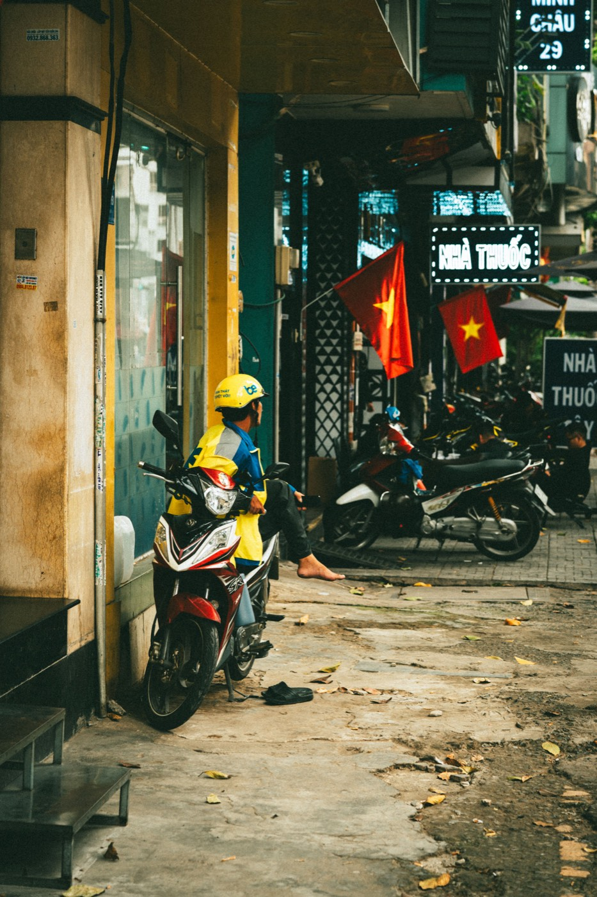

베트남에서의 첫 주유는 생각보다 쉽습니다: 다가가서 연료 종류와 금액 또는 “가득”을 말하고 결제하면 됩니다. 가장 중요한 것은 주유기 색으로 연료를 추측하지 않고, 낯선 오토바이에 아무거나 넣지 않는 것입니다.
베트남 주유소에서는 주로 RON 95 휘발유(흔히 A95라고 부름)와 E5 RON 92를 보게 됩니다. “좋은” 휘발유와 “나쁜” 휘발유가 아니라 서로 다른 연료입니다. 특정 오토바이의 기준은 제조사 권장 사항이나 모델의 스티커·설명서입니다. 중고 50cc를 막 샀는데 전에 무엇을 넣었는지 모른다면, 첫 주유 전에 판매자나 정비사에게 편하게 물어보세요.
이걸 신앙처럼 여길 필요는 없습니다: 정상적인 오토바이는 올바른 주유기만큼이나 제때의 정비, 깨끗한 오일, 무리 없는 주행을 좋아합니다. 하지만 연료 종류를 묻는 습관은 실수를 막는 좋은 방법입니다.
큰 주유소에서는 보통 탱크를 가리키고 연료 이름만 말하면 됩니다. 유용한 표현:
연료 가격은 바뀌므로 글이나 채팅의 옛 숫자에 기대지 말고 해당 주유소의 표시판을 보세요. 필요하면 영수증을 요청하세요.
주유기 옆에서 담배 피우지 말고, 주유 중 시동 걸지 말고, 억지로 “주입구 끝까지” 넣지 마세요. 구매 후 오토바이가 이상하다면 — 시동이 잘 안 걸리고, 꺼지고, 새거나, 휘발유 냄새가 난다면 — 연료 종류를 아무렇게나 바꿀 이유가 아닙니다. 먼저 진단이 필요합니다.
판매 전에 기본 기계를 점검하고 구매자에게 어떤 오토바이인지 설명합니다. 중고 50cc를 직접 고른다면 먼저 실제 상태와 주행거리 확인과 서류로 진짜 50cc 확인하는 법을 읽어보세요.